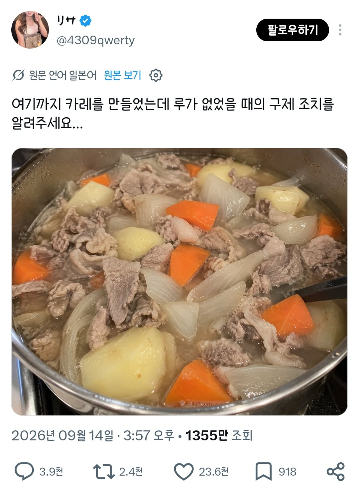

여기까지 만들었는데 카레가 없다고 함.
일본사람들의 추천 해결방법은 간장 맛술 설탕 넣고 니쿠쟈가로 만들라는것

여기까지 만들었는데 카레가 없다고 함.
일본사람들의 추천 해결방법은 간장 맛술 설탕 넣고 니쿠쟈가로 만들라는것
파란딱지 = 어그로 끌어서 수익내는 계정
걍 쟈글쟈글 졸이고 간 좀 하면 그거대로 이미 맛있겠는데
ㄹㅇ 간 맞추고 좀 졸이면 맛있겠구만
애초에 고기 썰어놓은게 카레가 아니구만
일본은 저걸로 많이함
제일 저렴한 고기인, 자투리 얇게썬 그람당 100엔쯤하는 코마기레
아하
600그램에 60000엔.. 일본의 물가는 정말 무섭군요..
겍
된장 풀어라
걍 나가서 사오면됨 ㅅㄱ
불끄고 카레가루 사오기
그냥 사와라
슴슴하이 그냥 무라.
김치?
편의점댕겨오면되자너
물 좀 버리고 갈비찜 느낌나게 선회하면 되겠네
마트가서 사
된장
뭐해 김치 안넣고
된장풀어서 톤지루로 먹어
니쿠쟈가가 뭐지
쉽게 생각해서
고기감자조림이라 생각하면될듯
대충 된장풀면 만능임 그리고 한입먹어본 다음에 조미료 좋아하는거 조금 추가
저상태로 먹어도 존나 맛있는데 채수 육수 다 나온거라
트위터 글쓸시간에 나가서사오지 ㅂㅅ